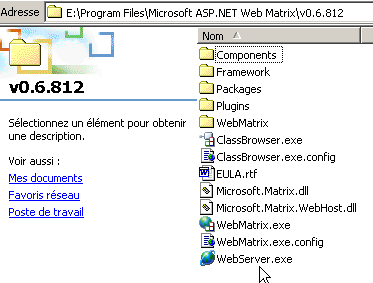
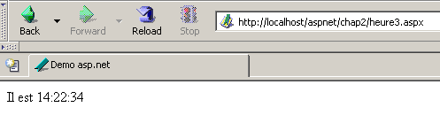

3. Introducción a la ASP.NET Desarrollo Web
3.1. Introducción
En el capítulo anterior se han presentado los principios del desarrollo web, que son independientes del lenguaje de programación utilizado. En la actualidad, tres tecnologías dominan el mercado del desarrollo web:
- J2EE, que es una plataforma de desarrollo Java. Combinada con la tecnología Struts, instalada en varios servidores de aplicaciones, la plataforma J2EE se utiliza principalmente en proyectos a gran escala. Gracias al lenguaje utilizado (Java), una aplicación J2EE puede ejecutarse en los principales sistemas operativos (Windows, Unix, Linux, Mac OS, etc.)
- PHP, que es un lenguaje interpretado también independiente del sistema operativo. A diferencia de Java, no es un lenguaje orientado a objetos. Sin embargo, se espera que la versión PHP5 introduzca características orientadas a objetos en el lenguaje. Fácil de usar, PHP se utiliza mucho en proyectos pequeños y medianos.
- ASP.NET es una tecnología que sólo funciona en máquinas Windows equipadas con la plataforma .NET (XP, 2000, 2003, etc.). El lenguaje de desarrollo utilizado puede ser cualquier lenguaje compatible con .NET, i.e., más de una docena, empezando por los lenguajes de Microsoft (C#, VB.NET, J#), Delphi de Borland, Perl, Python, ...
El capítulo anterior presentaba breves ejemplos para cada una de estas tres tecnologías. Este documento se centra en el desarrollo web ASP.NET utilizando el lenguaje VB.NET. Asumimos que usted está familiarizado con este lenguaje. Este punto es importante. Aquí, nos ocupamos únicamente de su uso en el contexto del desarrollo web. Vamos a profundizar en este punto hablando de la metodología MVC para el desarrollo web.
Una aplicación web que siga el modelo MVC se estructurará de la siguiente manera:

Una arquitectura de este tipo, conocida como arquitectura de 3 niveles, pretende adherirse al modelo MVC (Modelo-Vista-Controlador):
- la interfaz de usuario es la V (la vista)
- la lógica de la aplicación es el C (el controlador)
- las fuentes de datos son el M (Modelo)
La interfaz de usuario suele ser un navegador web, pero también podría ser una aplicación independiente que envía peticiones HTTP al servicio web a través de la red y formatea los resultados que recibe. El sitio lógica de aplicación consiste en scripts que procesan las peticiones de los usuarios. El sitio fuente de datos suele ser una base de datos, pero también pueden ser simples archivos planos, un directorio LDAP, un servicio web remoto, etc. Al desarrollador le interesa mantener un alto grado de independencia entre estas tres entidades, de modo que si una de ellas cambia, las otras dos no tengan que cambiar, o sólo mínimamente.
- La lógica de negocio de la aplicación se colocará en clases separadas de la clase que controla el diálogo petición-respuesta. Así, el bloque [Lógica de la aplicación] anterior podría constar de los siguientes elementos:

Dentro del bloque [Lógica de aplicación], podemos distinguir
- la clase controlador, que sirve como punto de entrada de la aplicación.
- el bloque [Business Classes], que agrupa las clases necesarias para la lógica de la aplicación. Éstas son independientes del cliente.
- el bloque [Data Access Classes], que agrupa las clases necesarias para recuperar los datos requeridos por el servlet, a menudo datos persistentes (base de datos, archivos, servicio web, etc.)
- el bloque de páginas ASP que constituyen las vistas de la aplicación.
En casos sencillos, la lógica de la aplicación suele reducirse a dos clases:
- la clase controladora que gestiona la comunicación cliente-servidor: procesa la solicitud y genera varias respuestas
- la clase de negocio que recibe los datos a procesar del controlador y le devuelve los resultados. Esta clase de negocio gestiona el acceso a los datos persistentes.
El aspecto único del desarrollo web reside en escribir la clase controladora y las páginas de presentación. Las clases de negocio y de acceso a datos son clases .NET estándar que pueden utilizarse tanto en una aplicación web como en una aplicación Windows o incluso en una aplicación de consola. Escribir estas clases requiere una sólida comprensión de la programación orientada a objetos. En este documento, se escribirán en VB.NET, por lo que asumimos que dominas este lenguaje. Desde esta perspectiva, no hay necesidad de detenerse en el código de acceso a datos más de lo necesario. En casi todos los libros sobre ASP.NET, se dedica un capítulo al ADO.NET. El diagrama anterior muestra que el acceso a los datos es manejado por clases estándar .NET que no son conscientes de que están siendo utilizadas en un contexto web. El controlador, que actúa como jefe de equipo de la aplicación web, no necesita preocuparse por ADO.NET. Simplemente necesita saber a qué clase solicitar los datos requeridos y cómo solicitarlos. Eso es todo. Colocar código ADO.NET en el controlador viola el concepto MVC explicado anteriormente, y no lo haremos.
3.2. Herramientas
Este documento está dirigido a estudiantes, por lo que trabajaremos con herramientas gratuitas disponibles para su descarga en Internet:
- la plataforma .NET (compiladores, documentación)
- el entorno de desarrollo WebMatrix, que incluye el servidor web Cassini
- varios DBMSs (MSDE, MySQL)
Se recomienda a los lectores que consulten el apéndice "Herramientas web", que explica dónde encontrar y cómo instalar estas diversas herramientas. La mayoría de las veces, sólo necesitaremos tres herramientas:
- un editor de texto para escribir aplicaciones web.
- una herramienta de desarrollo VB.NET para escribir código VB cuando es sustancial. Este tipo de herramienta suele ofrecer asistencia para la introducción de código (autocompletado) y detección de errores de sintaxis, ya sea mientras se escribe el código o durante la compilación.
- un servidor web para probar las aplicaciones web que has escrito. En este documento utilizaremos Cassini. Los lectores que dispongan de un servidor IIS pueden sustituir Cassini por IIS. Ambos son compatibles con .NET. Sin embargo, Cassini está limitado a responder sólo a peticiones locales (localhost), mientras que IIS puede responder a peticiones de máquinas externas.
Un entorno comercial excelente para desarrollar en VB.NET es Visual Studio.NET de Microsoft. Este IDE repleto de funciones permite gestionar todo tipo de documentos (código VB.NET, documentos HTML, XML, hojas de estilo, etc.). Para escribir código, ofrece la inestimable ayuda del "completado" automático de código Dicho esto, esta herramienta, que mejora notablemente la productividad del desarrollador, tiene un inconveniente: confina al desarrollador a un modo de desarrollo estándar ciertamente eficaz, pero no siempre adecuado.
Es posible utilizar el servidor Cassini fuera de [WebMatrix], y eso es lo que haremos a menudo. El ejecutable del servidor se encuentra en <WebMatrix>\<versión>\WebServer.exe, donde <WebMatrix> es el directorio de instalación de [WebMatrix] y <versión> es su número de versión:

Abramos una ventana de símbolo del sistema y naveguemos hasta la carpeta del servidor Cassini:
E:\Program Files\Microsoft ASP.NET Web Matrix\v0.6.812>dir
...
29/05/2003 11:00 53 248 WebServer.exe
...
Vamos a ejecutar [WebServer.exe] sin ningún parámetro:

El panel de arriba muestra que la aplicación [WebServer/Cassini] acepta tres parámetros:
- /puerto: número de puerto del servicio web. Puede ser cualquier número. El valor por defecto es 80
- /ruta: ruta física a una carpeta del disco
- /vpath: carpeta virtual asociada a la carpeta física precedente.
Colocaremos nuestros ejemplos en un árbol de archivos con el directorio raíz P y las carpetas chap1, chap2, ... para los diferentes capítulos de este documento. Asociaremos la ruta virtual V a esta carpeta física P. También lanzaremos Cassini con el siguiente comando DOS:
For example, if we want the server’s physical root to be the folder [D:\data\devel\aspnet\poly] and its virtual root to be [aspnet], the DOS command to start the web server will be:
Puede guardar este comando como un acceso directo. Una vez iniciado, Cassini coloca un icono en la barra de tareas. Al hacer doble clic en él, se abre un panel de Inicio/Parada del servidor:

El panel muestra los tres parámetros utilizados para lanzarlo. Ofrece dos botones de inicio/parada, así como un enlace de prueba a la raíz de su árbol de directorios web. Hacemos clic en él. Se abre un navegador y se solicita el URL [http://localhost/aspnet]. Vemos el contenido de la carpeta especificada anteriormente en el campo [Physical Path]:

En este ejemplo, el URL solicitado corresponde a una carpeta y no a un documento web, por lo que el servidor muestra el contenido de esa carpeta y no un documento web concreto. Si hay un archivo llamado [default.aspx] en esta carpeta, se mostrará. Por ejemplo, vamos a crear el siguiente archivo y colocarlo en la raíz del árbol web de Cassini (d:\data\devel\aspnet\poly aquí):
Ahora vamos a solicitar el URL [http://localhost/aspnet] utilizando un navegador:

Vemos que en realidad se mostraba el URL [http://localhost/aspnet/default.aspx]. Más adelante en este documento, explicaremos cómo debe configurarse Cassini utilizando la notación Cassini(ruta,vruta), donde [ruta] es el nombre de la carpeta raíz del árbol de directorios web del servidor y [vruta] es la ruta virtual asociada. Recordemos que con el servidor Cassini(path,vpath), el URL [http://localhost/vpath/XX] corresponde a la ruta física [path\XX]. Colocaremos todos nuestros documentos bajo un directorio raíz físico que llamaremos <webroot>. Así, podemos referirnos al archivo <webroot>\chap2\here1.aspx. Para cada lector, este directorio <webroot> será una carpeta en su máquina personal. Aquí, las capturas de pantalla mostrarán que esta carpeta suele ser [d:\data\devel\aspnet\poly]. Sin embargo, esto no siempre será el caso, ya que las pruebas se realizaron en diferentes máquinas.
3.3. Primeros ejemplos
Presentaremos algunos ejemplos sencillos de páginas web dinámicas creadas con VB.NET. Animamos a los lectores a probarlos para verificar que su entorno de desarrollo está correctamente instalado. Veremos que hay varias formas de construir una página ASP.NET. Elegiremos una para el resto de nuestro trabajo de desarrollo.
3.3.1. Ejemplo básico - Variante 1
Herramientas necesarias: un editor de texto, el servidor web Cassini
Vamos a retomar el ejemplo del capítulo anterior. Crearemos el siguiente archivo [heure1.aspx]:
<html>
<head>
<title>Demo asp.net </title>
</head>
<body>
Il est <% =Date.Now.ToString("T") %>
</body>
</html>
Este código es código HTML con una etiqueta especial <% ... %>. Dentro de esta etiqueta, puede colocar código VB.NET. Aquí, el código
genera una cadena C que representa la hora actual. La etiqueta <% ... %> se sustituye entonces por esta cadena C. Así, si C es la cadena 18:11:01, la línea HTML que contiene el código VB.NET se convierte en:
Coloquemos el código anterior en el fichero [<webroot>\chap2\heure1.aspx]. Iniciemos Cassini(<webroot>,/aspnet) y solicitemos el URL [http://localhost/aspnet/chap2/heure1.aspx] en un navegador:

Una vez que obtenemos este resultado, sabemos que el entorno de desarrollo está correctamente instalado. La página [heure1.aspx] ha sido compilada ya que contiene código VB.NET. Su compilación produjo un archivo DLL que fue almacenado en una carpeta del sistema y luego ejecutado por el servidor Cassini.
3.3.2. Ejemplo básico - variante 2
Herramientas necesarias: un editor de texto, el servidor web Cassini
El documento [heure1.aspx] mezcla código HTML y código VB.NET. En un ejemplo tan sencillo, esto no supone ningún problema. Si necesita incluir más código VB.NET, querrá separar más claramente el código HTML del código VB. Esto puede hacerse encerrando el código VB dentro de una etiqueta <script>:
<script runat="server">
' calcul des données à afficher par le code HTML
...
</script>
<html>
....
' affichage des valeurs calculées par la partie script
</html>
El ejemplo [heure2.aspx] demuestra este método:
<script runat="server">
Dim maintenant as String=Date.Now.ToString("T")
</script>
<html>
<head>
<title>Demo asp.net </title>
</head>
<body>
Il est
<% =maintenant %>
</body>
</html>
Colocamos el documento [heure2.aspx] en el árbol de directorios [<webroot>\chap2\heure2.aspx] en el servidor web Cassini (<webroot>,/aspnet) y solicitamos el documento utilizando un navegador:

3.3.3. Ejemplo básico - Variante 3
Herramientas necesarias: un editor de texto, el servidor web Cassini
Llevamos la separación del código VB y el código HTML un paso más allá colocándolos en dos archivos separados. El código HTML estará en el archivo [heure3.aspx] y el código VB en [heure3.aspx.vb]. El contenido de [heure3.aspx] será el siguiente:
<%@ Page Language="vb" src="heure3.aspx.vb" Inherits="heure3" %>
<html>
<head>
<title>Demo asp.net</title>
</head>
<body>
Il est
<% =maintenant %>
</body>
</html>
Hay dos diferencias fundamentales:
- la directiva [Page] con atributos que aún no están definidos
- el uso de la variable [now] en el código HTML aunque no esté inicializada en ninguna parte
La directiva [Page] se utiliza aquí para indicar que el código VB que inicializará la página se encuentra en otro archivo. El atributo [src] especifica este archivo. Veremos que el código VB pertenece a una clase llamada [heure3]. Transparente para el desarrollador, un archivo .aspx se convierte en una clase que deriva de una clase base llamada [Page]. Aquí, nuestro documento HTML debe derivar de la clase que define y calcula los datos que necesita mostrar. En este caso, se trata de la clase [heure3] definida en el fichero [heure3.aspx.vb]. Por lo tanto, debemos especificar esta relación padre-hijo entre el documento VB [heure3.aspx.vb] y el documento HTML [heure3.aspx]. El atributo [inherits] especifica esta relación. Debe indicar el nombre de la clase definida en el fichero apuntado por el atributo [src].
Examinemos ahora el código VB de la página:
Public Class heure3
Inherits System.Web.UI.Page
' data of the web page to be displayed
Protected maintenant As String
Private Sub Page_Load(ByVal sender As System.Object, ByVal e As System.EventArgs) Handles MyBase.Load
'calculates the web page data
maintenant = Date.Now.ToString("T")
End Sub
End Class
Tenga en cuenta los siguientes puntos:
- El código VB define una clase [heure3] derivada de la clase [System.Web.UI.Page]. Este es siempre el caso, ya que una página web siempre debe derivar de [System.Web.UI.Page].
- La clase declara un atributo protegido [ahora]. Sabemos que un atributo protegido es directamente accesible en las clases derivadas. Esto es lo que permite al documento HTML [heure3.aspx] acceder al valor del dato [now] en su código.
- El atributo [maintenant] se inicializa en un procedimiento [Page_Load]. Veremos más adelante que un objeto [Page] es notificado por el servidor web de una serie de eventos. El evento [Load] se produce cuando el objeto [Page] y sus componentes han sido creados. El controlador de este evento se designa mediante la directiva [Handles MyBase.Load]
- El nombre [XX] del manejador de eventos puede ser cualquiera. Su firma debe ser la que se muestra arriba. No vamos a explicar esto en detalle por ahora.
- A menudo utilizamos el manejador de eventos [Page.Load] para calcular los valores de los datos dinámicos que debe mostrar la página web.
Los ficheros [heure3.spx] y [heure3.aspx.vb] se encuentran en [<webroot>\chap2]. A continuación, mediante un navegador, solicitamos el URL [http://localhost/aspnet/chap2/heure3.aspx] al servidor web (<webroot>,/aspnet):

3.3.4. Ejemplo básico - Variante 4
Herramientas necesarias: un editor de texto, el servidor web Cassini
Usamos el mismo ejemplo que antes, pero consolidamos todo el código en un único archivo [heure4.aspx]:
<script runat="server">
' data of the web page to be displayed
Private maintenant As String
' evt page_load
Private Sub Page_Load(ByVal sender As System.Object, ByVal e As System.EventArgs) Handles MyBase.Load
'calculates the web page data
maintenant = Date.Now.ToString("T")
End Sub
</script>
<html>
<head>
<title>Demo asp.net</title>
</head>
<body>
Il est
<% =maintenant %>
</body>
</html>
Vemos la misma secuencia que en el ejemplo 2:
Esta vez, el código VB se ha organizado en procedimientos. Vemos el procedimiento [Page_Load] del ejemplo anterior. El objetivo aquí es demostrar que una página .aspx independiente (no vinculada al código VB en un archivo separado) se convierte implícitamente en una clase derivada de [Page]. Por lo tanto, podemos utilizar los atributos, métodos y eventos de esta clase. Esto es lo que se hace aquí, donde utilizamos el evento [Load] de esta clase.
El método de ensayo es idéntico a los anteriores:

3.3.5. Ejemplo básico - Variante 5
Herramientas necesarias: un editor de texto, el servidor web Cassini
Como en el Ejemplo 3, separamos el código VB y el código HTML en dos archivos distintos. El código VB se coloca en [heure5.aspx.vb]:
Public Class heure5
Inherits System.Web.UI.Page
' data of the web page to be displayed
Protected maintenant As String
Private Sub Page_Load(ByVal sender As System.Object, ByVal e As System.EventArgs) Handles MyBase.Load
'calculates the web page data
maintenant = Date.Now.ToString("T")
End Sub
End Class
El código HTML se coloca en [heure5.aspx]:
<%@ Page Inherits="heure5" %>
<html>
<head>
<title>Demo asp.net</title>
</head>
<body>
Il est
<% =maintenant %>
</body>
</html>
Esta vez, la directiva [Page] ya no especifica el vínculo entre el código HTML y el código VB. El servidor web ya no puede localizar el código VB para compilarlo (falta el atributo src). Nos corresponde a nosotros realizar esta compilación. Por lo tanto, en una ventana DOS, compilamos la clase VB [heure5.aspx.vb]:
dos>dir
23/03/2004 18:34 133 heure1.aspx
24/03/2004 09:47 232 heure2.aspx
24/03/2004 10:16 183 heure3.aspx
24/03/2004 10:16 332 heure3.aspx.vb
24/03/2004 14:31 440 heure4.aspx
24/03/2004 14:45 332 heure5.aspx.vb
24/03/2004 14:56 148 heure5.aspx
dos>vbc /r:system.dll /r:system.web.dll /t:library /out:heure5.dll heure5.aspx.vb
Compilateur Microsoft (R) Visual Basic .NET version 7.10.3052.4
En el ejemplo anterior, el ejecutable del compilador [vbc.exe] estaba en el DOS de la máquina PATH. Si no hubiera sido así, habría tenido que especificar la ruta completa a [vbc.exe], que se encuentra en el árbol de directorios donde estaba instalado el NET SDK. Las clases derivadas de [Page] requieren recursos presentes en el DLLs [system.dll, system.web.dll], de ahí que se haga referencia a ellos mediante la opción /r del compilador. La opción /t:library se utiliza para indicar que queremos generar un DLL. La opción /out especifica el nombre del fichero a generar, en este caso [heure5.dll]. Este fichero contiene la clase [heure5] requerida por el documento web [heure5.aspx]. Sin embargo, el servidor web busca el DLLs que necesita en ubicaciones específicas. Una de estas ubicaciones es la carpeta [bin] situada en la raíz de su árbol de directorios. Esta raíz es lo que hemos llamado <webroot>. Para el servidor IIS, suele ser <drive>:\inetpub\wwwroot>, donde <drive> es la unidad (C, D, ...) donde se instaló IIS. Para el servidor Cassini, esta raíz se corresponde con el parámetro /ruta utilizado al iniciarlo. Recuerde que puede obtener este valor haciendo doble clic en el icono del servidor en la barra de tareas:

<webroot> corresponde al atributo [Physical Path] anterior. Por lo tanto, creamos una carpeta <webroot>\bin y colocamos [heure5.dll] dentro de ella:

Ya estamos listos. Solicitamos el URL [http://localhost/aspnet/chap2/heure5.aspx] al servidor Cassini (<webroot>,/aspnet):

3.3.6. Ejemplo básico - Variante 6
Herramientas necesarias: un editor de texto, el servidor web Cassini
Hasta ahora hemos demostrado que una aplicación web dinámica tiene dos componentes:
- VB código para calcular las partes dinámicas de la página
- código HTML, incluyendo a veces código VB para mostrar estos valores en la página. Esta parte representa la respuesta enviada al cliente web.
El componente 1 se denomina página controlador y el componente 2 es el presentación componente. En presentación debe contener el menor código VB posible, o incluso ningún código VB. Veremos que esto es posible. Aquí mostramos un ejemplo en el que sólo hay un controlador y ningún componente de presentación. Es el propio controlador el que genera la respuesta al cliente sin la ayuda del componente de presentación.
El código de presentación pasa a ser el siguiente:
Podemos ver que ya no hay código HTML dentro. La respuesta se genera directamente en el controlador:
Public Class heure6
Inherits System.Web.UI.Page
Private Sub Page_Load(ByVal sender As System.Object, ByVal e As System.EventArgs) Handles MyBase.Load
' we work out the answer
Dim HTML As String
HTML = "<html><head><title>heure6</title></head><body>Il est "
HTML += Date.Now.ToString("T")
HTML += "</body></html>"
' we send it
Response.Write(HTML)
End Sub
End Class
Aquí, el controlador construye la respuesta completa en lugar de sólo sus partes dinámicas. También la envía. Lo hace utilizando la propiedad [Response] de tipo [HttpResponse] en la clase [Page]. Este objeto representa la respuesta del servidor al cliente. La clase [HttpResponse] tiene un método [Write] para escribir en el flujo HTML que se enviará al cliente. Aquí, almacenamos todo el flujo HTML a enviar en la variable [HTML] y lo enviamos al cliente usando [Response.Write(HTML)].
Solicitamos el URL [http://localhost/aspnet/chap2/heure6.aspx] al servidor Cassini (<webroot>,/aspnet):

3.3.7. Conclusión
Next, we will use Method 3, which places the VB code and the HTML code of a dynamic web document into two separate files. This method has the advantage of splitting a web page into two components:
- a controlador componente formado únicamente por código VB para calcular las partes dinámicas de la página
- a presentación que es la respuesta enviada al cliente. Consiste en código HTML que puede incluir código VB para mostrar valores dinámicos. Siempre intentaremos tener el menor código VB posible en el componente de presentación; lo ideal sería no tener ninguno.
Como se muestra en el Método 5, el controlador puede compilarse independientemente de la aplicación web. Esto tiene la ventaja de permitirte centrarte únicamente en el código y recibir una lista de todos los errores con cada compilación. Una vez compilado el controlador, se puede probar la aplicación web. Sin compilación previa, el servidor web se encargará de esto, y los errores serán reportados uno por uno. Esto puede considerarse tedioso.
For the examples that follow, the following tools are sufficient:
- un editor de texto para crear los documentos HTML y VB de la aplicación cuando son simples
- un NET de desarrollo IDE para construir clases VB.NET con el fin de beneficiarse de la ayuda que este tipo de herramienta proporciona a la hora de escribir código. Un ejemplo de este tipo de herramienta es CSharpDevelop (http://www.icsharpcode.net). En el apéndice [Herramientas de desarrollo web] se muestra un ejemplo de su uso.
- el WebMatrix para construir las páginas de presentación de la aplicación (véase el apéndice [Herramientas de desarrollo web]).
- En Cassini servidor
Todas estas herramientas son gratuitas.